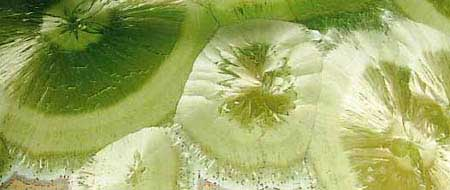
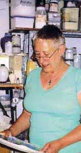
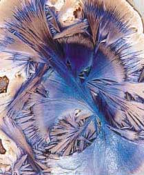
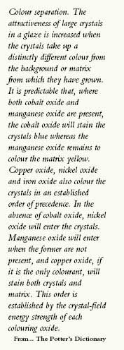
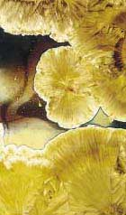
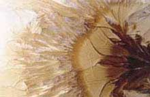
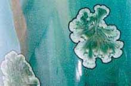
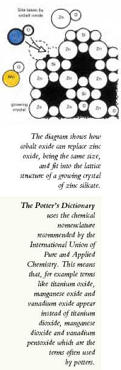

| Visible
Crystals
Janet Hamer outlines the new glazes of Avril
Farley and describes how these sculptural crystal shapes are formed
Reproduced with kind permission
of Ceramics Technical.
© Ceramics Technical
and Janet Hamer.

We
are all keen to make a mixture of minerals, take it to a temperature
and wonder at transformations –or we should be. It is like
pushing seeds into a garden and, with a bit of nurture, flowers
open and spread their colours. Making crystals is like that: a lot
of science, patience and beauty. Large crystals grown in a glaze
even look like flowers. They often resemble lichens and three-dimensional
fans and feathers.
Crystalline glazes are those in which the oxides in the melt reform
in new associations as the glaze cools to give a glass with crystals
visible at the surface. A mass of crystals too small to be seen
individually can give opacity and matt surfaces. Larger crystals
can be grown upwards of 15 cm, appearing to float in a glassy matrix.
These wonderful shapes, of distinctly different colour from their
background are the result of manipulating the glaze formula and
the cooling rate of the kiln. This is the science and the patience.
The beauty manifests itself magically from these processes.
Typical crystal shapes are soft flat rounds which may impinge
on each other in clusters, modifying the symmetry. A central star
or bundle of needles can be seen in a smooth area before a fibrous
ring fans out as a halo. Further haloes edge the shape where it
meets the background glaze or matrix. The whole of this shape is
coloured by the penetration of a colouring oxide into the crystal
and is clearly seen against the background. There is often a delicate
fringe of a slightly different colour where crystal meets matrix.
The haloes can be deliberately placed centrally or around the border
of the crystal. Where the glaze is thicker, as in the well of a
bowl, the three-dimensional forms can be seen as fibrous fans filling
the depth. Time is needed during the cooling of the glaze for crystals
to form.
In the early stages of cooling, if the temperature is held around
1090ºC for approximately two hours, the crystals begin as simple
needle shapes. These can fan out at each end into ‘double-axehead
shapes’. These attractive and intriguing crystals can be retained,
frozen at this stage by cooling the kiln rapidly after this growing
period. The fuller rounder shapes develop when the temperature is
subsequently maintained for further crystal growing periods. These
periods, or pauses, are programmed into the cooling graph of the
kiln controller and may last from three to eight hours.
| Porcelain
is often the choice of body for use with crystalline glazes.
Bright colours show up welland there is little contamination
from the bodyduring the slow cooling. The main glazeconstituent
is a frit. This provides most of theglass which melts at the
appropriate temperature.
Ferro frit 3110 analysis
Silica (Si02) 69.8Sodium oxide (Na2O) 15.3Calcium oxide (CaO)
6.3Aluminium oxide (A12O3) 3.7Boron oxide (B2O3) 2.6Potassium
oxide (K2O) 2.3
Avril Farley glaze recipes:
1. Ferro frit 3110 47
Calcined zinc oxide 23 Calcined china clay 3
Flint 23 Titanium oxide 4
2. High Alkaline Frit 2275 46
Silica 18
Zinc oxide 24
China clay 40
Titanium oxide 8
Oxides of copper, cobalt andmanganese are added totalling
a maximum of 8%. |
Each glaze component has a particular role
but these are not single elements and their contributions
overlap. The frit is designed to make the glaze melt quickly
at top temperature. This presents a fully molten mix which
is immediately ready for the new bondings to be formed. The
rapid firing up to and down from the top temperature avoids
the formation of a body-glaze layer which inhibits the forming
of large crystals. Zinc oxide combines with flint and provides
the zinc silicate for large crystals. The china clay gives
stability and hardness to the final glaze. The flint is almost
pure silica. It can be a different type from that provided
by the frit for the main glassy ingredient and supplies nuclei
for crystals. Titanium oxide contributes nuclei as ‘seeds’
for the initiation of crystals. It also brightens colours
and assists the movement of colour in the glaze.
The oxides (or carbonates which lose their carbon and excess
oxygen in the fusion) of copper, cobalt and manganese, colour
the glaze matrix, or the crystals, or sometimes both in specific
ways, according to their ‘field strengths’.
Crystals grow in the cooling glaze by the isolation of particular
oxides from the surrounding glaze. Zinc silicate is most often
the material of large crystals. In the molten glaze the molecules
of the glaze minerals are loosened from their original combinations
giving a fluid mixture of individual molecules. In a normal
glaze, as cooling begins, these molecules link together to
form irregular chains. This creates the amorphous substance,
glass. For crystals to develop, the temperature is held for
those periods when molecules orientate into more specifically
organised chains. They establish bonds which produce lattice
structures which are the framework of crystals. The unsatisfied
valencies existing in the melt link to sites where they form
new combinations. |
 |
Left: This complex crystal shows the fan-like
growth and three-dimensional appearance in the depth of glaze.
The blue staining ofthe crystal is incomplete due to the small
percentage of cobalt oxidein the recipe. The pot was glazed
first with a Ferro Frit-based glazeand over this a High Alkaline
Frit 2275 base glaze. Each onecontained 0.5% cobalt oxide
and 3% manganese carbonate.
Crystal formation is a selective process. As some constituents
are precipitated, the remaining matrix is changed. The isolation
of some of the constituents upsets the previous balance. Some
of the remaining oxides can no longer remain unattached. They
combine as larger molecules and stiffen the matrix. The matrix
then sets quickly and crystals can no longer develop. |
There
are orders and preferences for how the molecules which jostle freely
in the melt will re-bond into new lattice structures. Each element
is characterised by a value number or valency. This number is based
on the number of electrons in each atom and establishes its combining
power. Valencies are balanced to match. For example, hydrogen is
1, oxygen is 2, therefore two hydrogen atoms are needed to match
one oxygen, giving the familiar chemical symbol H2O (water).
The elements which are frequently used to colour the zinc silicate
crystals are cobalt, manganese and copper. They have valencies of
cobalt 2 and 3, manganese 2, 3 and 4, and copper 1 and 2. They have
2 in common with zinc and therefore compete for the same sites when
new combinations are being formed. In the Periodic Table the colouring
elements are grouped together as ‘transition’ elements.
Other elements in this grouping have similar properties and are
likely to be useful in a similar way.
There are further rules which govern the selective process by which
crystals are positively coloured, why blue on an ochre ground predominates
whereas green can be subtly combined. The electrons of the atoms,
which are negatively charged, exert forces of attraction or repulsion
on others which are in close proximity. This activity is referred
to as an energy field. Colour separation is explained in the following
extract from the section on crystalline glazes in The Potter’s
Dictionary:
In order to colour the precipitating zinc-silicate crystals,
the colouring oxides must be able to fit into the lattice structure.
To enter the crystal, the metal colouring atom must be able to
occupy one of the six sites otherwise held by zinc in the zinc-silicate
lattice. Cobalt, nickel, copper, iron and manganese are transition
metals and are adjacent to zinc in the periodic table. They are
polyvalent and can be divalent to match zinc. Their atom sizes
are also similar to that of zinc. Therefore all these metals can
enter and colour the crystals.
| Right: The colours here are from ilmenite (FeTiO3,
iron and titanium oxide) andcerium oxide (CeO2) which has properties
similar to tin oxide. |
 |
The reason for the order of precedence is that they have different
liquid-to-crystal partition co-efficients, or field strengths. Cobalt
oxide and nickel oxide have high field strengths. Manganese oxide
is intermediate and copper oxide is low. Zinc oxide has a higher
field strength than does copper oxide and, therefore, copper oxide
tends not to partition strongly but will stain both the matrix and
the crystals at the same time.
Avril Farley has been making crystal-glazed ceramics for four years.
Her workshop is a small, neatly organised outbuilding. The workroom
and its surrounding work areas are next to the cottage where Avril
lives with her husband, Ken. The setting is rural Gloucestershire
in the Royal Forest of Dean, England. The cottage and workshop stand
above a delightful sunny garden which slopes steeply down to a stream.
The slope and footbridge are the route up and down which all clay,
equipment and finished work must be portered. In the late 1780s
this cottage was a pub humorously named ‘The Sow with Three
Tits’. Here cider was made and served to the iron workers
who toiled immediately opposite, across the stream.
Avril Farley’s production consists of thrown plates, bottles
and bowls. She prefers Limoges porcelain body, from Potterycrafts.
She uses a Mervyn Fitzwilliam Craftsman wheel. She does a small
amount of turning to make neat footrims which accommodate the inevitable
glaze run and grinding. The two 4 1/2 cu ft electric kilns are fired
at night for economy with the use of two Cambridge 401+ controllers.
She usually achieves two biscuit and one glaze per week, alternating
with one biscuit and two glaze firings.
|  |
 |
| This fringe-edged crystal is approximately 4 cm across.
Itappears in a glaze with 1.5% vanadium oxide (V205)
and1.5% ilmenite in a Ferro Frit base glaze. |
This glaze shows how copper oxide can give a green stain
toboth crystal and matrix. The glaze has 3% copper oxide and
3% barium carbonate (BaCO3). The barium carbonate
shiftsthe colour towards turquoise. |
Glazes
are brushed on, thicker above than below to allow for considerable
glaze movement. Calcining the zinc oxide removes water and helps
to avoid flaking of the glaze. A binder, ‘CMC’, is used
to make the glaze less friable. Every pot is fired on a ‘catcher’
made to measure. Surplus run off glaze is contained by the ‘catcher’
which must be separated after firing. Glaze and foot are then ground
smooth. This is a demanding process requiring specialised grinders
for the particular shapes and a skilled operator who is efficiently
clad in protective clothing, goggles and helmet. Every firing contains
tests. New shapes show their effect on glaze run and positioning
of crystals. The permutations seem infinite. The diagram shows how
felspar, Alkaline Frit 2275 or Ferro Frit 3110, sometimes layered
cobalt oxide can replace zinc together. Firing is usually to between
1245ºC and 1265ºC with many growing pauses in the cooling
cycle. The first at 1080ºC for 30 minutes followed by a pause
at 1060ºC for 30 minutes, then a rise to 1080ºC again.
There may be as many as six pauses but Farley also likes to vary
the timing of of zinc silicate. These periods to give more interestingly
placed haloes.
Farley declares her approach to ceramic chemistry was instinctive.
From a nonscientific early career she is now developing a firm understanding
of chemistry through methodical practice and application. She enjoys
the discipline which the creation of crystalline glazes demands.
In a detailed directive to herself, ‘The Learning Curve’,
she stipulates every practical rule steering a controlled course
through trial and error progress.
Record keeping is unquestionable. Glaze making is precise and meticulous
with thorough attention to care of equipment. Firing records include
identification of all tests, positions in the kiln, weather (for
its influence on cooling rates), temperature readings and digital
pictures are stored. Suggestions for variations on every aspect
of the making follow with practical guidance for control of glaze
fusion, and ending with warnings against impatient kiln opening.
Avril Farley is currently experimenting with more materials based
on elements from the lanthanoid series sometimes called ‘rare
earths’.
Janet Hamer, with co-author Frank Hamer,
are the compilers of The Potter’s Dictionary of Materials and
Techniques now in its 5th edition (A & C Black).
More Articles
|